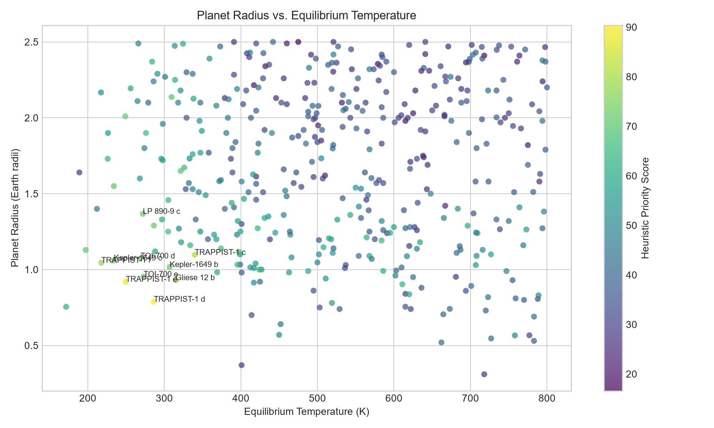
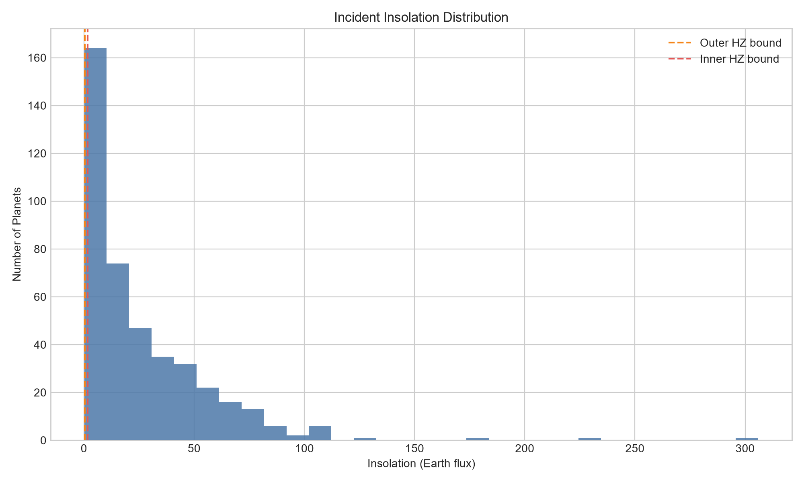
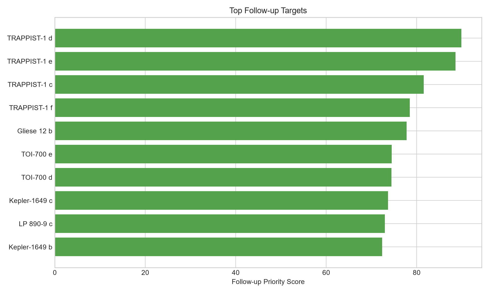
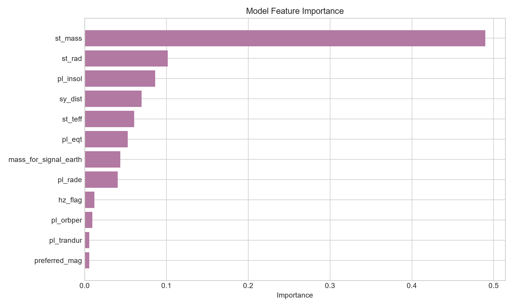
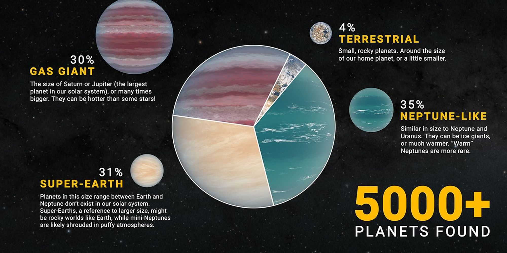

Exoplanet Biosignature Follow-up Dashboard
This static dashboard translates the pipeline outputs into a presentation-ready research view. It highlights the strongest atmospheric follow-up candidates, and summarizes model performance.
Research Framing
The ranking emphasizes planets that are small, temperate, transiting, and observationally practical for future atmospheric spectroscopy. The score is a follow-up prioritization signal, not a life-detection claim.
Transparent heuristic score Machine-learning ranking layer Weekly NASA updates SQLite history trackingTop Priority Targets
These are the current top-ranked shortlist planets for atmospheric biosignature follow-up planning.
| priority_rank | pl_name | hostname | follow_up_priority_score | heuristic_priority_score | ml_predicted_priority_score | hz_flag | pl_rade | pl_eqt | pl_insol | sy_dist | preferred_mag | atmospheric_signal_ppm | discoverymethod | disc_year | disc_facility |
|---|---|---|---|---|---|---|---|---|---|---|---|---|---|---|---|
| 1 | TRAPPIST-1 e | TRAPPIST-1 | 87.662 | 87.068 | — | 1 | 0.920 | 249.700 | 0.646 | 12.430 | 11.354 | 15.221 | Transit | 2017 | Multiple Observatories |
| 2 | TRAPPIST-1 d | TRAPPIST-1 | 87.123 | 90.330 | 84.985 | 1 | 0.788 | 286.200 | 1.115 | 12.430 | 11.354 | 19.551 | Transit | 2016 | La Silla Observatory |
| 3 | TRAPPIST-1 c | TRAPPIST-1 | 79.256 | 81.227 | 77.942 | 0 | 1.097 | 339.700 | 2.214 | 12.430 | 11.354 | 18.572 | Transit | 2016 | La Silla Observatory |
| 4 | TRAPPIST-1 f | TRAPPIST-1 | 78.318 | 78.191 | 78.402 | 1 | 1.045 | 217.700 | 0.373 | 12.430 | 11.354 | 12.952 | Transit | 2017 | Multiple Observatories |
| 5 | Gliese 12 b | Gliese 12 | 75.722 | 77.883 | 74.281 | 1 | 0.930 | 314.600 | 1.620 | 12.210 | 8.619 | 2.919 | Transit | 2024 | Transiting Exoplanet Survey Satellite (TESS) |
| 6 | TOI-700 d | TOI-700 | 73.921 | 74.556 | 73.497 | 1 | 1.073 | 268.800 | 0.850 | 31.127 | 9.469 | 1.154 | Transit | 2020 | Transiting Exoplanet Survey Satellite (TESS) |
| 7 | TOI-700 e | TOI-700 | 73.569 | 73.808 | 73.410 | 1 | 0.953 | 272.900 | 1.270 | 31.127 | 9.469 | 1.254 | Transit | 2023 | Transiting Exoplanet Survey Satellite (TESS) |
| 8 | Kepler-1649 c | Kepler-1649 | 73.557 | 73.366 | 73.685 | 1 | 1.060 | 234 | 0.750 | 92.191 | 13.379 | 3.330 | Transit | 2020 | Kepler |
| 9 | Kepler-1649 b | Kepler-1649 | 71.888 | 72.609 | 71.407 | 0 | 1.017 | 307 | 2.208 | 92.191 | 13.379 | 4.495 | Transit | 2017 | Kepler |
| 10 | K2-72 e | K2-72 | 71.461 | 72.398 | 70.836 | 1 | 1.290 | 286.340 | 1.200 | 66.432 | 11.685 | 1.954 | Transit | 2016 | K2 |
Interactive Shortlist Explorer
This table runs entirely inside the browser. It lets a reviewer search the shortlist, isolate habitable-zone candidates, and sort by different follow-up priorities without needing a server.
Visualization Gallery
The dashboard reuses the pipeline figures so a reviewer can move from rank tables to pattern recognition quickly.




Model Snapshot
Selected model: gradient_boosting
Test MAE: 1.971
Test RMSE: 2.756
Cross-validation R²: 0.934
Feature Importance
The most influential variables in the selected model give a compact explanation of what drives the ranking.
| feature | importance |
|---|---|
| st_mass | 0.521 |
| st_rad | 0.100 |
| sy_dist | 0.082 |
| pl_eqt | 0.075 |
| mass_for_signal_earth | 0.055 |
| pl_insol | 0.055 |
| pl_rade | 0.032 |
| st_teff | 0.022 |
| hz_flag | 0.013 |
| gravity_earth | 0.008 |
Leaderboard Changes
New top-10 entries: K2-72 e
Removed top-10 entries: LP 890-9 c
| pl_name | previous_rank | current_rank | rank_change | score_change |
|---|---|---|---|---|
| Kepler-1649 b | 10 | 9 | 1 | -0.502 |
| TOI-700 d | 7 | 6 | 1 | -0.524 |
| TRAPPIST-1 e | 2 | 1 | 1 | -0.891 |
| Kepler-1649 c | 8 | 8 | 0 | -0.106 |
| TRAPPIST-1 f | 4 | 4 | 0 | -0.154 |
Run History
This table shows the recent execution history of the pipeline and supports long-term monitoring.
| run_timestamp_utc | raw_rows | clean_rows | training_rows | shortlist_rows | selected_model | test_mae | test_rmse | test_r2 | cv_mae_mean | cv_r2_mean |
|---|---|---|---|---|---|---|---|---|---|---|
| 2026-06-16T07-00-45Z | 6240 | 6240 | 354 | 24 | gradient_boosting | 2.275 | 3.244 | 0.961 | 2.388 | 0.926 |
| 2026-06-16T07-04-22Z | 6240 | 6240 | 354 | 24 | gradient_boosting | 2.275 | 3.244 | 0.961 | 2.388 | 0.926 |
| 2026-06-16T07-08-15Z | 6240 | 6240 | 354 | 24 | gradient_boosting | 2.275 | 3.244 | 0.961 | 2.388 | 0.926 |
| 2026-06-17T13-42-20Z | 6240 | 6240 | 354 | 24 | gradient_boosting | 2.275 | 3.244 | 0.961 | 2.388 | 0.926 |
| 2026-06-17T14-25-48Z | 6240 | 6240 | 354 | 24 | gradient_boosting | 2.275 | 3.244 | 0.961 | 2.388 | 0.926 |
| 2026-06-19T05-49-39Z | 6240 | 6193 | 421 | 27 | gradient_boosting | 2.195 | 2.871 | 0.954 | 2.041 | 0.946 |
| 2026-08-03T17-18-41Z | 6275 | 6229 | 421 | 27 | gradient_boosting | 2.475 | 3.511 | 0.936 | 2.169 | 0.947 |
| 2026-08-06T20-53-13Z | 6278 | 6232 | 422 | 27 | gradient_boosting | 1.971 | 2.756 | 0.964 | 2.343 | 0.934 |
Explore the Exoplanet Archive
Explore thousands of known exoplanets with NASA's interactive Eyes on Exoplanets tool.
Launch Eyes on ExoplanetsTypes of Exoplanets
